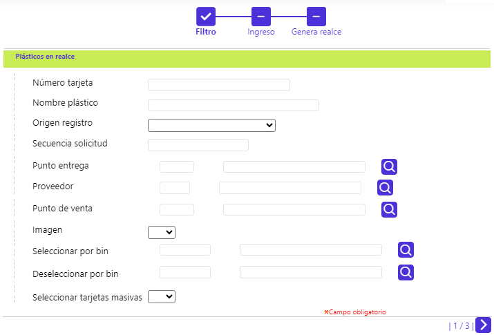
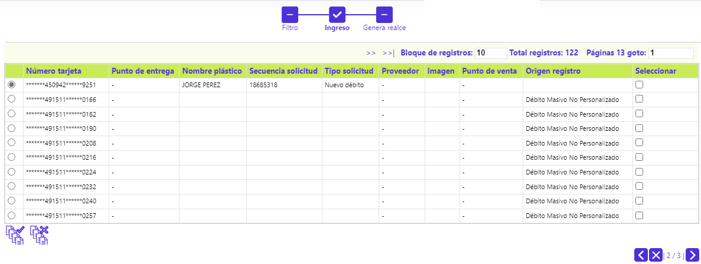
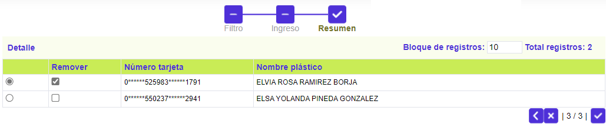
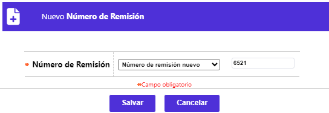
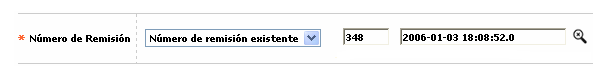

Plásticos a realzar
Al invocarse el formulario, el usuario dispone de diferentes criterios que le permiten seleccionar, de aquellos registros de solicitudes que arriban a la etapa de realce y, se encuentran listos para ser enviados al proveedor encargado de efectuar el proceso de realce (embosado) de los mismos, con el fin de poderlos entregar posteriormente a los clientes, como materialización de la tarjeta que le ha sido otorgada por la entidad.
Es importante señalar que esta funcionalidad aplica para aquellos productos a los cuales se les haya definido que Si emiten plástico. Al ingresar a la opción, el usuario se encuentra con un wizard de tres pasos, en el que, la primera página corresponde a un filtro en el cual, es opcional el diligenciar alguno de los criterios, y de esa manera agrupar los registros de solicitudes de tarjetas que se desea enviar a proceso de realce (embosado).

Descripción de campos
|
Número tarjeta |
Campo alfanumérico de hasta 23 posiciones en el que se puede ingresar el número de alguna tarjeta en particular que se desee consultar para realce. |
|
Nombre plástico |
En este campo se ingresa como criterio para la consulta el nombre del cliente tal y como debe ir realzado en el plástico. |
|
Origen registro plástico |
Campo que posee lista de valore tipo combo de la cual se puede seleccionar entre: Débito Masivo No Personalizado o Crédito Masivo No Personalizado, el evento que dió origen a la solicitud de los plásticos que se desea consultar para realce. |
|
Secuencia solicitud |
En este campo numérico se puede ingresar el número de la solicitud específica para la cual se desean consultar el plástico a realzar. |
|
Punto entrega |
Campo con lista de valores que permite seleccionar el punto de entrega asociado con las tarjetas para las cuales se desea consultar y ejecutar el proceso de realce. |
|
Proveedor |
Campo con lista de valores que permite seleccionar el proveedor asociado con las tarjetas para las cuales se desea consultar y ejecutar el proceso de realce. |
|
Punto de venta |
Campo con lista de valores que permite seleccionar el punto de venta definido por la entidad, asociado con las tarjetas para las cuales se desea consultar y ejecutar el proceso de realce. |
|
Imagen |
Campo que posee lista de valores tipo combo de la que puede seleccionarse entre: Si o No, los plástico a consultar tienen o deben llevar una imagen. |
|
Seleccionar por Bin |
Campo que posee lista de valores adjunta, de la que puede seleccionarse el Bin de las tarjetas para las cuales se desea consultar y ejecutar el proceso de realce. |
|
Deseleccionar por Bin |
Campo que posee lista de valores adjunta, de la que puede seleccionarse el Bin de las tarjetas para las cuales se desea excluir de la consulta para luego ejecutar el proceso de realce. |
|
Seleccionar tarjetas masivas |
Campo que posee lista de valores tipo combo de la que puede seleccionarse entre: Si o No, se deben incluir del proceso de realce, a los plásticos de los procesos de generación masiva de tarjetas. |
Una vez seleccionados los criterios y al desplazarse a la segunda página del wizard, se muestran los registros que cumplen con las condiciones indicadas por el usuario, mostrando para cada uno de ellos: Número de tarjeta (enmascarado), Punto de entrega, Nombre a realzar en el plástico, Secuencia solicitud, Tipo de solicitud, dato del Proveedor, dato de si lleva imagen, Punto de venta, Origen del registro y, un campo para marcar aquellos registros que se quiera enviar a realce, en caso que el usuario no desee ejecutar la acción para todos los registros desplegados por los filtros.
Esta segunda página del wizard cuenta con dos botónes especiales que le permiten a la entidad Seleccionar o Deseleccionar todos los registros desplegados en el formulario y así facilitar avanzar al tercer paso del wizard.

En la tercera página del wizard, se muestran los registros que el usuario seleccionó para ejecutar el proceso de realce, en caso que éste no se vaya a aplicar para todos los registros desplegado en la segunda página y mediante el botón de palomita o visto bueno, se ordena la generación del archivo de realce respectivo.

Al momento de ordenar la ejecución del proceso de generación del archivo de realce, el sistema evalúa el campo Control de remisión de plásticos, contenido en la opción Parámetros operativos y cuando este se encuentra en 'Si' se despliega un nuevo formulario en el que se puede seleccionar una remisión ya existente o crear un nuevo número remisión.


Botones especiales
Seleccionar / Deseleccionar: Dupla de botones especiales que le permiten a la entidad, marcar o desmarcar, todos los registros desplegados en el segundo paso del wizard y así facilitar avanzar al tercer paso del mismo.